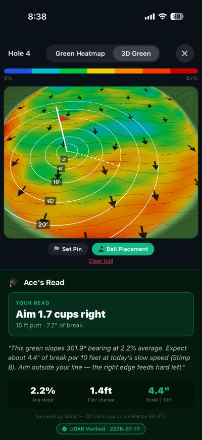

Drone LiDAR surveys for golf courses
Know every contour of your course.
ACE maps your greens, fairways, drainage and trees from the air, then hands your superintendent and architect maps and files they can put to work.
Already live: all 9 greens at Sinnissippi in Rockford, mapped with drone LiDAR for the ACE app.
What courses use it for
Answers for the questions you argue about in the cart barn.
What you get
Maps your crew can use. Files your architect can open.
Included in every survey
- Aerial photo map (orthomosaic) for planning, marketing and a base map
- Bare-earth terrain model for grading and renovation
- 1-ft contour lines for design and drainage planning
- One organized folder with everything in it
- A short walkthrough video of your results
- A review call to go over it together
File formats
- PDFPrint it, email it, pin it to the wall
- GeoTIFFMaps and terrain for GIS software
- DXF and ShapefileContours and layers for CAD and GIS
- LAS or LAZThe full point cloud for architects and surveyors
Pricing
Straightforward starting prices.
The base package is the aerial photo map, the terrain model and 1-ft contours. Every course is a little different, so we confirm the price after we scope your course.
9 holes
From$3,500
Base package
18 holes
From$6,000
Base package
Resort or multi-course
Custom quote
Tell us what you've got
Add-ons, priced with your quote
Add what your course needs. We'll recommend the right ones when we scope your course and price them in your quote.
| Add-on | What courses use it for | Formats |
|---|---|---|
| Green detail package | Fine contours, slope and pin-zone maps for green rebuilds and pin placement | PDF, GeoTIFF |
| Drainage analysis | Flow paths, low spots and slope for wet areas and regrading | PDF, GIS layers |
| Tree and canopy map | Tree removal, shade and turf | Shapefile or GeoJSON, PDF |
| 3D model and flythrough video | Members, owners and marketing | Web viewer link, MP4 |
| Point cloud and CAD contour files | Architects and surveyors | LAS or LAZ, DXF |
| Cut/fill volumes and cross-sections | Renovation bids and earthwork | PDF, CSV, DWG |
Founding course program
Be one of the first courses we map.
Get the base package at a reduced rate in exchange for ACE keeping a copy of the data for its course library. You still get every deliverable, and your course is among the first mapped for the ACE caddy app.
How it works
Four steps. Scheduled around play.
- ScopeWe walk the course with you, agree on the area to fly and sign an agreement covering flight permission and data rights.
- FlyWe set ground control points, then fly the LiDAR and photo passes, scheduled around your tee sheet.
- ProcessWe separate the ground from trees and buildings, build the model, contours and maps, and check them against the ground points.
- DeliverYou get one organized folder, a walkthrough video and a review call.
Why ACE
Golf people, not just drone people.

Good to know
Can it find buried drain tile or irrigation lines?
No. LiDAR maps the surface only. It shows where water flows and collects on top of the ground, but it can't see what's buried under it.
How do trees affect the data?
LiDAR reaches the ground through gaps in the canopy, but very dense evergreens reduce ground coverage under them. Fall and winter flights give the best view under deciduous trees.
Who owns the data?
Your course gets every deliverable. Data rights are written into the agreement before we fly. In the founding course program, ACE also keeps a copy for its course library.
Is this a legal boundary survey?
No. ACE provides mapping and data. A legal boundary or stamped survey needs a licensed land surveyor.
Get a quote for your course.
Tell us the course name, the number of holes and what you want to learn. We will reply with a price.